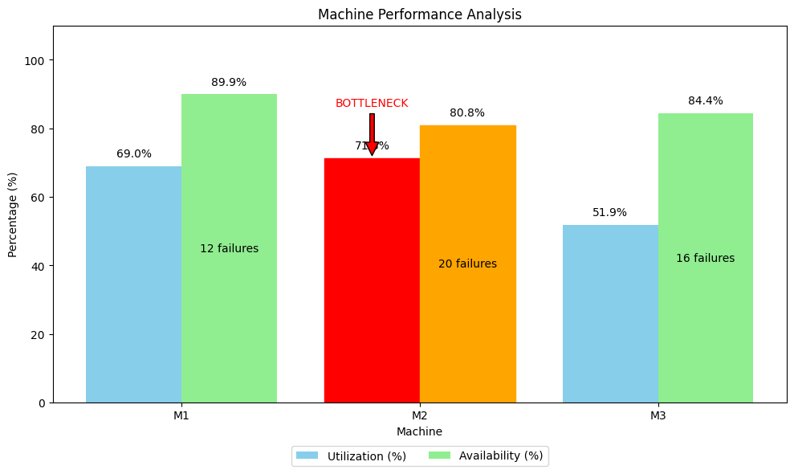
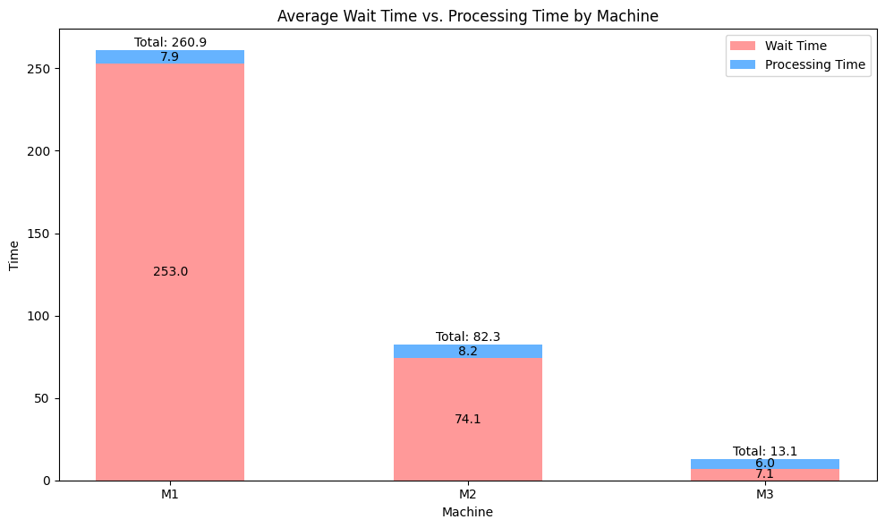
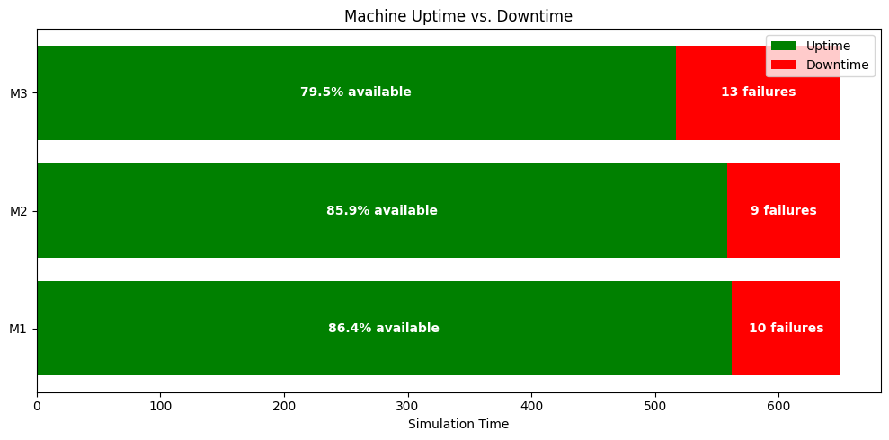
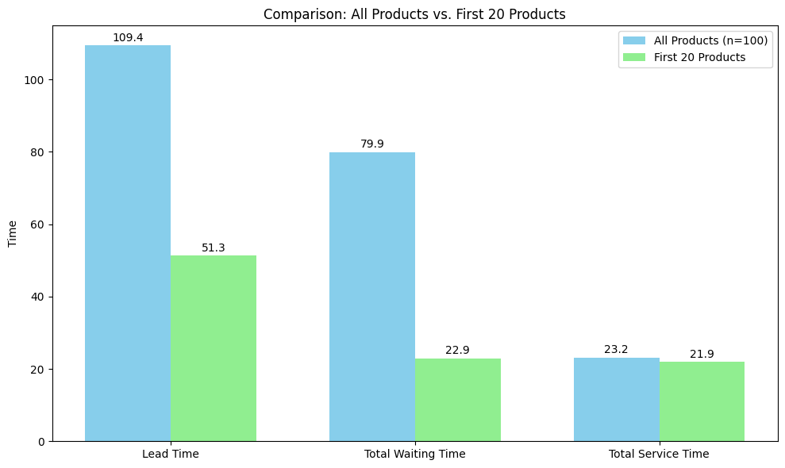
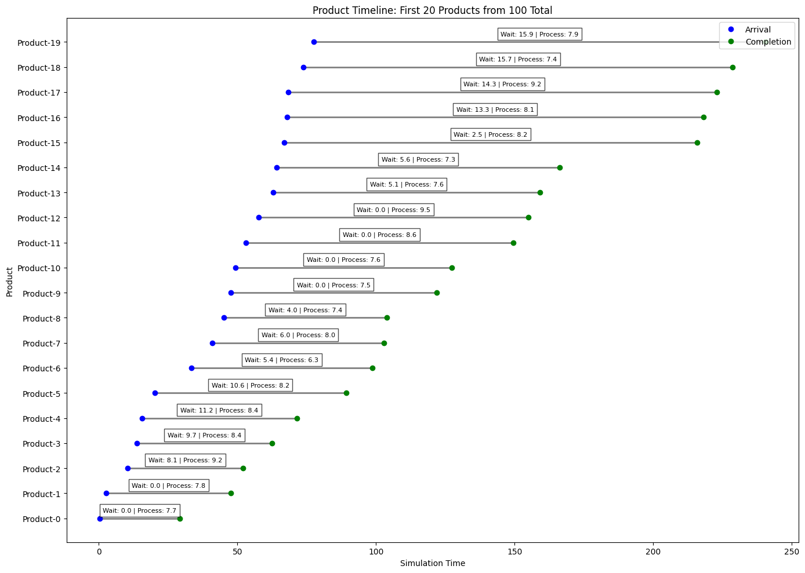

Product Metrics Analysis
This chart provides a detailed breakdown of the selected products' performance metrics.

Generated on 2025-05-16 20:08:55
This simulation models a factory production line with three machines in series (M1, M2, M3). Each machine processes products sequentially, and machines can experience random failures.
This machine has the highest utilization (65.6%) and is limiting the overall system throughput.
This machine experienced the most failures during the simulation, with 19 breakdowns.
Products per Time Unit
Average Lead Time
System Efficiency
This chart shows the utilization and availability of each machine. The bottleneck machine is highlighted in red.
Machine M1 is operating at high utilization (65.6%), indicating it's limiting system throughput. Consider adding capacity to this machine or reducing its processing time.
This chart shows the average waiting and processing times for each machine. Longer waiting times indicate potential bottlenecks.
Products spend significant time waiting for M1. This confirms that this machine is a bottleneck and should be prioritized for improvement.
This chart shows the uptime and downtime for each machine during the simulation.
Machine M1 had the most failures. Improving maintenance or upgrading this machine could increase overall system throughput by reducing downtime.
This chart compares key metrics between all simulated products and the selected sample displayed in this report.
This chart helps verify if the selected products shown in this report are representative of the entire simulation.
This chart shows how the selected 20 products moved through the production line.
This chart provides a detailed breakdown of the selected products' performance metrics.
| Average Waiting Time | Average Service Time | Average Lead Time | Waiting Time Percentage | Throughput (products/time unit) | System Efficiency (%) |
|---|---|---|---|---|---|
| 124.25 | 21.34 | 158.12 | 78.58 | 0.06 | 13.5 |
| Machine | Products Processed | Utilization (%) | Availability (%) | Total Downtime | Number of Failures |
|---|---|---|---|---|---|
| M1 | 42 | 65.62 | 68.77 | 156.14 | 19 |
| M2 | 39 | 64.37 | 68.25 | 158.77 | 17 |
| M3 | 32 | 36.93 | 52.10 | 239.52 | 18 |
Showing 20 products out of 32 total simulated products.
| Product | Arrival | Completion | Lead Time | Total Waiting Time | Total Service Time | M1 Queue Time | M1 Processing Time | M2 Queue Time | M2 Processing Time | M3 Queue Time | M3 Processing Time | M1 Time | M2 Time | M3 Time |
|---|---|---|---|---|---|---|---|---|---|---|---|---|---|---|
| Product-0 | 4.02 | 38.33 | 34.32 | 0.00 | 20.32 | 0.00 | 5.57 | 0.00 | 7.46 | 0.00 | 7.28 | 5.57 | 7.46 | 7.28 |
| Product-1 | 4.96 | 47.67 | 42.71 | 4.63 | 19.08 | 4.63 | 9.72 | 0.00 | 7.71 | 0.00 | 1.65 | 15.72 | 7.71 | 1.65 |
| Product-2 | 10.43 | 55.26 | 44.83 | 27.00 | 17.82 | 14.88 | 7.58 | 12.13 | 9.25 | 0.00 | 0.99 | 7.58 | 9.25 | 0.99 |
| Product-3 | 12.17 | 67.64 | 55.46 | 34.61 | 19.85 | 20.72 | 7.48 | 13.89 | 6.52 | 0.00 | 5.85 | 7.48 | 6.52 | 5.85 |
| Product-4 | 14.21 | 92.33 | 78.12 | 26.17 | 20.95 | 26.17 | 8.69 | 0.00 | 6.29 | 0.00 | 5.97 | 22.69 | 6.29 | 22.97 |
| Product-5 | 17.63 | 93.53 | 75.90 | 57.28 | 18.62 | 45.44 | 9.43 | 0.00 | 7.99 | 11.84 | 1.21 | 9.43 | 7.99 | 1.21 |
| Product-6 | 22.36 | 94.54 | 72.18 | 54.12 | 15.07 | 50.14 | 7.20 | 0.00 | 6.85 | 3.98 | 1.01 | 8.20 | 8.85 | 1.01 |
| Product-7 | 25.50 | 99.82 | 74.32 | 55.23 | 19.09 | 55.20 | 8.82 | 0.03 | 8.21 | 0.00 | 2.06 | 8.82 | 8.21 | 2.06 |
| Product-8 | 26.67 | 131.96 | 105.29 | 65.09 | 20.20 | 62.86 | 6.01 | 2.24 | 9.32 | 0.00 | 4.87 | 6.01 | 12.32 | 4.87 |
| Product-9 | 33.08 | 137.32 | 104.24 | 74.18 | 22.07 | 62.45 | 8.94 | 5.62 | 7.76 | 6.11 | 5.36 | 8.94 | 15.76 | 5.36 |
| Product-10 | 42.82 | 143.94 | 101.12 | 76.82 | 24.30 | 61.65 | 8.68 | 12.70 | 9.00 | 2.47 | 6.62 | 8.68 | 9.00 | 6.62 |
| Product-11 | 46.87 | 172.43 | 125.56 | 81.11 | 17.45 | 66.28 | 6.87 | 14.83 | 9.51 | 0.00 | 1.07 | 6.87 | 9.51 | 28.07 |
| Product-12 | 50.27 | 172.89 | 122.62 | 99.22 | 13.40 | 69.75 | 5.96 | 8.38 | 6.98 | 21.09 | 0.45 | 15.96 | 6.98 | 0.45 |
| Product-13 | 54.70 | 174.72 | 120.02 | 99.36 | 18.66 | 81.28 | 7.70 | 7.66 | 9.13 | 10.42 | 1.83 | 7.70 | 11.13 | 1.83 |
| Product-14 | 73.31 | 200.45 | 127.14 | 85.75 | 36.40 | 70.38 | 6.67 | 12.12 | 8.99 | 3.25 | 20.74 | 6.67 | 8.99 | 25.74 |
| Product-15 | 76.08 | 201.27 | 125.19 | 107.59 | 17.60 | 74.27 | 7.27 | 13.84 | 9.50 | 19.48 | 0.82 | 7.27 | 9.50 | 0.82 |
| Product-16 | 78.98 | 204.43 | 125.45 | 100.03 | 20.41 | 78.65 | 8.59 | 9.75 | 8.67 | 11.64 | 3.15 | 13.59 | 8.67 | 3.15 |
| Product-17 | 80.25 | 219.91 | 139.66 | 108.57 | 30.09 | 90.96 | 6.39 | 12.02 | 8.21 | 5.58 | 15.49 | 6.39 | 9.21 | 15.49 |
| Product-18 | 84.11 | 221.21 | 137.10 | 114.35 | 16.75 | 93.50 | 7.40 | 7.84 | 8.05 | 13.01 | 1.30 | 13.40 | 8.05 | 1.30 |
| Product-19 | 92.26 | 246.98 | 154.73 | 108.94 | 27.78 | 98.75 | 8.05 | 5.84 | 8.96 | 4.35 | 10.77 | 10.05 | 9.96 | 25.77 |
| Time | Event |
|---|---|
| 4.02 | Product-0 ARRIVED |
| 4.02 | Product-0 START M1 |
| 4.96 | Product-1 ARRIVED |
| 9.59 | Product-0 END M1 |
| 9.59 | Product-0 START M2 |
| 9.59 | Product-1 START M1 |
| 10.43 | Product-2 ARRIVED |
| 10.61 | M3 FAILED |
| 11.54 | M1 FAILED |
| 11.59 | Product-1 PAUSED M1 due to failure |
| 12.17 | Product-3 ARRIVED |
| 12.59 | Product-1 PAUSED M1 due to failure |
| 13.59 | Product-1 PAUSED M1 due to failure |
| 14.21 | Product-4 ARRIVED |
| 14.59 | Product-1 PAUSED M1 due to failure |
| 15.59 | Product-1 PAUSED M1 due to failure |
| 16.59 | Product-1 PAUSED M1 due to failure |
| 17.05 | Product-0 END M2 |
| 17.05 | Product-0 WAITING for M3 repair |
| 17.37 | M1 REPAIRED |